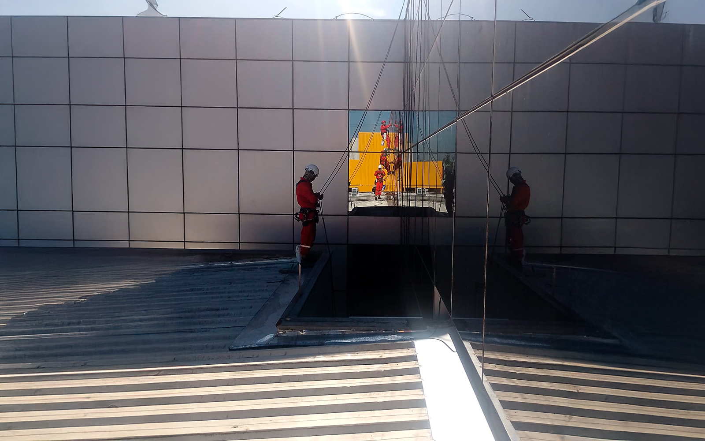

A Evolution Alpinismo Industrial oferece soluções de revestimentos protetivos que maximizam a durabilidade e valorizam suas estruturas, protegendo-as contra intempéries, corrosão e desgaste natural.
Garanta o funcionamento e segurança de máquinas e sistemas elevados.

A manutenção de equipamentos em altura é um serviço essencial para a continuidade operacional e a segurança de edifícios e indústrias em São Paulo. Para gestores de facilities, garantir o funcionamento adequado de sistemas elevados, como ventilação, iluminação, painéis solares e antenas, é crucial. A Evolution Alpinismo Industrial oferece soluções completas, utilizando o alpinismo industrial para acessar e tratar qualquer equipamento em altura com eficiência e segurança.
Nossa equipe especializada realiza desde inspeções e diagnósticos até reparos, substituição de peças e limpeza técnica de equipamentos elevados. Com o acesso por corda, alcançamos locais de difícil acesso com agilidade e sem a necessidade de andaimes, minimizando o tempo de inatividade e os custos, ideal para a gestão eficiente de facilities.
Garantimos o bom desempenho e a longevidade de seus equipamentos em altura, prevenindo falhas e paradas inesperadas.
Realizamos desde pequenos ajustes até a substituição de componentes, assegurando a funcionalidade dos sistemas.
Nossos serviços seguem rigorosos protocolos de segurança (NR-35, IRATA) e garantem a conformidade com as normas regulamentadoras.
Profissionais certificados e experientes em manutenção de diversos tipos de equipamentos em altura.
A manutenção de equipamentos em altura para facilities em São Paulo com a Evolution é a garantia de um parceiro confiável para a gestão de ativos em altura. Conte com nossa expertise para manter suas instalações seguras, funcionais e eficientes.

Ao terceirizar a manutenção de equipamentos em altura, sua empresa de facilities ganha:
Soluções seguras e inovadoras para serviços em altura.
Entre em ContatoRespostas para as perguntas mais comuns sobre nosso serviço de manutenção de equipamentos em São Paulo para gestores de facilities.